RoboTL development: Panda pickup and the OPH wrist
Dat Nguyen
01Panda arm YCB pickup
02OPH on a motor-driven wrist
Hand-only YCB pickup
Stock LEAP hand on a two-axis wrist, base welded palm down, no arm. Sampling MPC: 2 s horizon, 256 samples x 4 rounds, 6 s episode
Best apple run, handwritten staged loss: apple centre above 12 cm (rests at 7.4 cm) from 2.17 s to the 6 s end
Hammer: all 6 held-out runs failed
Panda and LEAP assembly
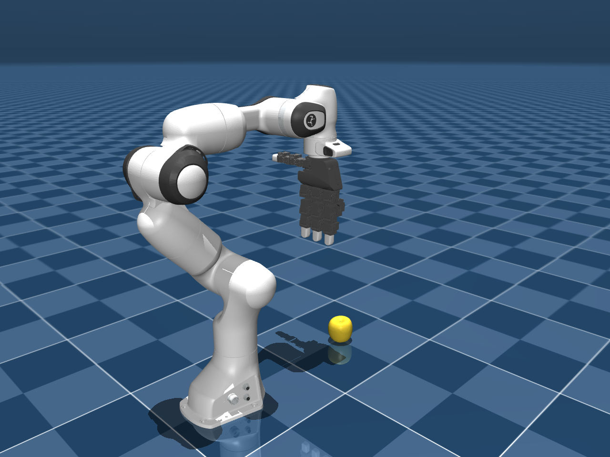
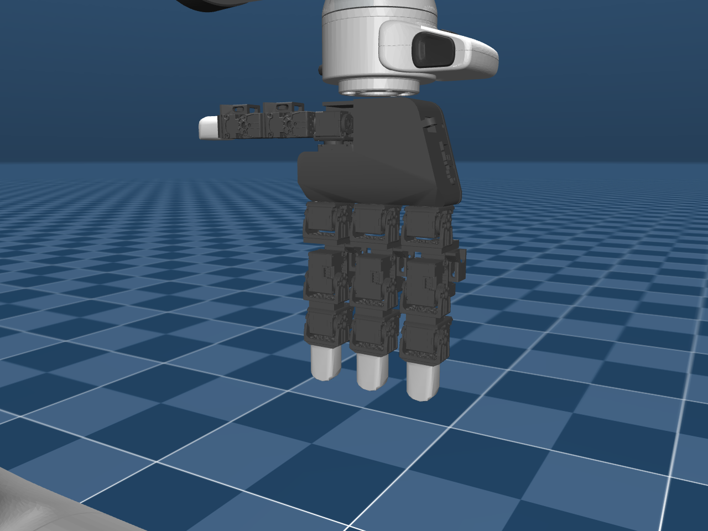
LEAP palm centered on the Panda flange, facing down, 5 mm gap
Panda meshes from MuJoCo Menagerie, pinned revision, SHA256 checked
Per-joint torque limits: 87 Nm for joints 1 to 4, 12 Nm for 5 to 7
No adapter part: its geometry and inertia are not modeled
Visual and collision meshes
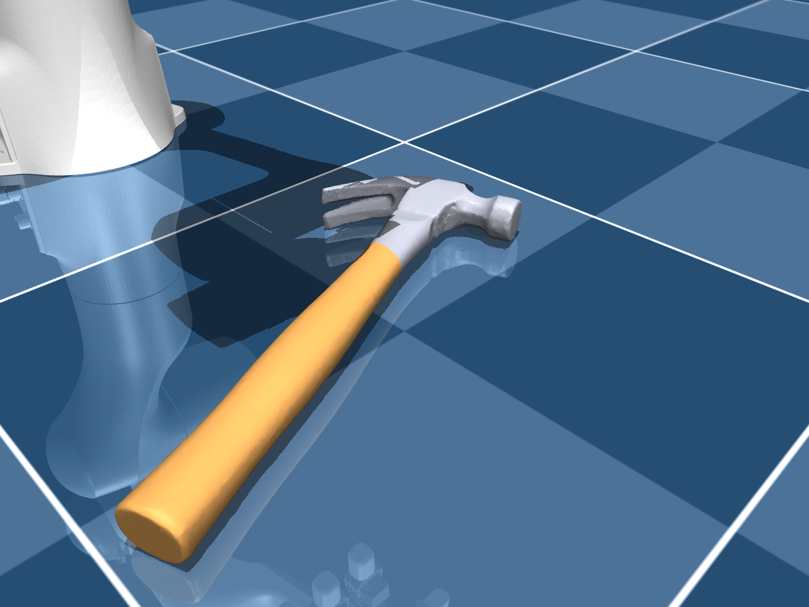
Visual: YCB scan
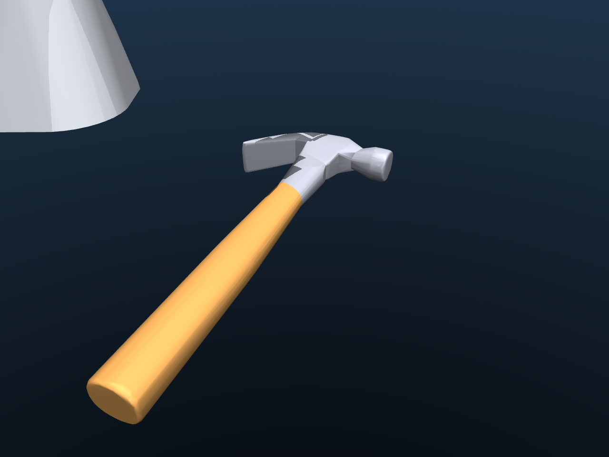
Collision: convex hulls, up to 6 per part
Physics uses only the hulls; the scan is drawn on top through vshape
Hiding collision meshes under visual overlays
Before: hulls drawn over the scan, filled claw
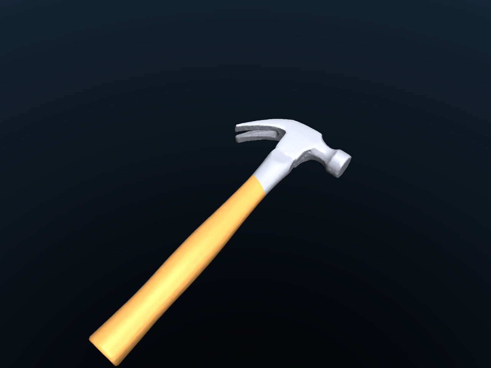
After: hulls hidden
Only the render group changes; collision and inertia are the same
Teleop, record, replay
Scripted keyboard input, 9 s at a 5 ms step: reach, descend, curl, lift
Replaying the saved controls: all 1800 steps, maximum joint position error 0
The fingers touch the apple but do not pick it up
Physical profiles
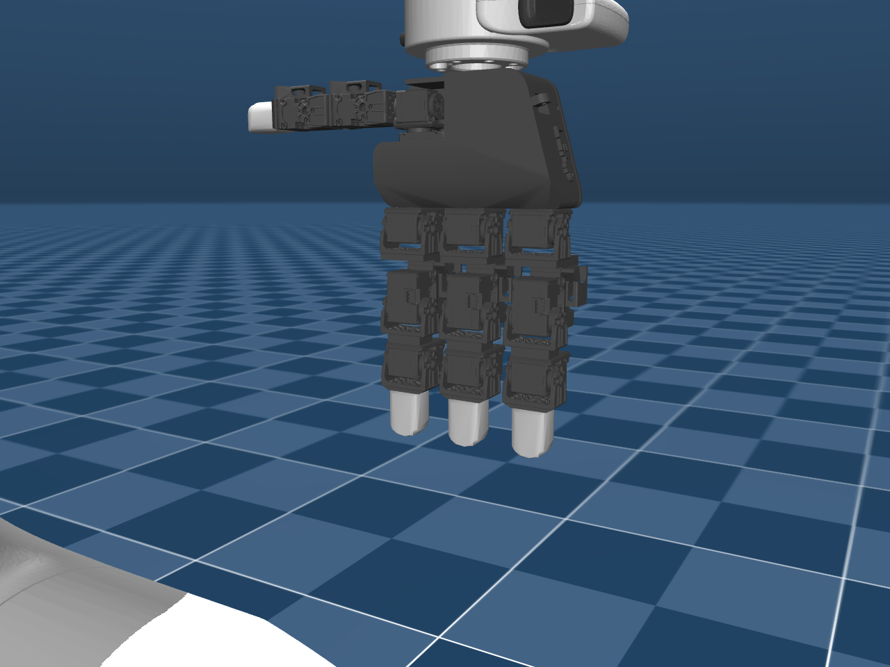
Stock
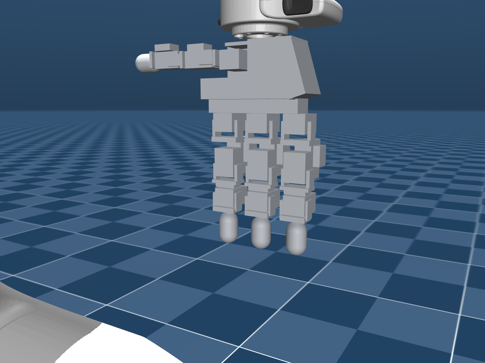
Spacers: last finger segment 0.85x, last thumb segment 1.15x
Scene profiles: object mass, tilt, object and hand friction, distal segment lengths
Spacer hands render as primitives: the stock meshes do not scale
Pickup search
A grasp is 15 parameters: the wrist offset and orientation relative to the object's grasp point (x, y, z, yaw, pitch, roll), 4 finger angles shared by all three fingers, 4 thumb angles, and an opening fraction
The controller executes it through 4 IK wrist waypoints, 1.5 s apart: 15 cm above the grasp point with the hand open, at it open, at it closed, then 15 cm above it closed
One grasp serves every placement: the search does not tune per placement
Search is the cross-entropy method, repeated for 8 to 12 generations:
Draw 32 grasps from a Gaussian over the 15 parameters, centred on the current estimate (initially a given seed grasp)
Simulate each grasp on the 4 training placements and sum the loss being searched (next slides); a grasp whose arm cannot reach a waypoint is discarded
Move the Gaussian's mean and spread to the 6 lowest-loss grasps; keep the best grasp seen so far
waypoints = [data.ctrl.copy()]
for position, hand in (
(goal + [0, 0, LIFT_TARGET_M], opened),
(goal, opened),
(goal, closed),
(goal + [0, 0, LIFT_TARGET_M], closed),
):
for _ in range(IK_MAX_ITERATIONS):
delta = site_pose_ik_step(
model, scratch, flange, self.arm_dofs, position, goal_rotation
)
...
if (
position_error > IK_POSITION_TOLERANCE_M
or angle_error > IK_ANGLE_TOLERANCE_RAD
):
return None
...
target[self.hand_actuators] = hand
waypoints.append(target)
...
controls = np.stack(
[np.interp(sample_times, times, values[:, i]) for i in range(model.nu)],
axis=-1,
)
Open loop: the whole 8 s command sequence is fixed before the episode starts; nothing reacts to contact
goal: the object's grasp point plus the grasp's x, y, z offset, at the grasp's yaw, pitch and roll
closed: the grasp's finger and thumb angles. opened: base joints scaled by the opening fraction, middle and distal joints by 0.3
Commands interpolated linearly between waypoints at every 5 ms step; the last waypoint is held for the final 2 s
IK fails at any waypoint: the grasp is rejected as unreachable
How the hand picks up the apple
Stock hand, searched grasp; one 8 s episode, frames at the waypoint times
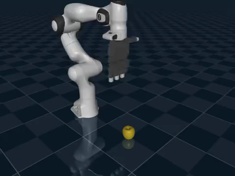
0 s start
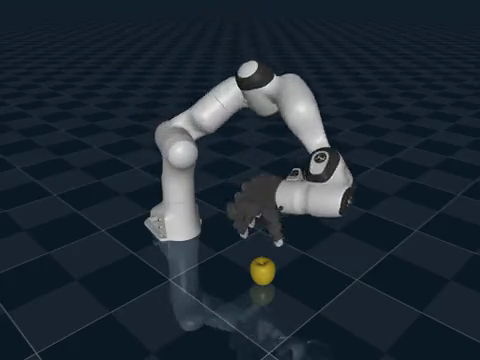
1.5 s above, open
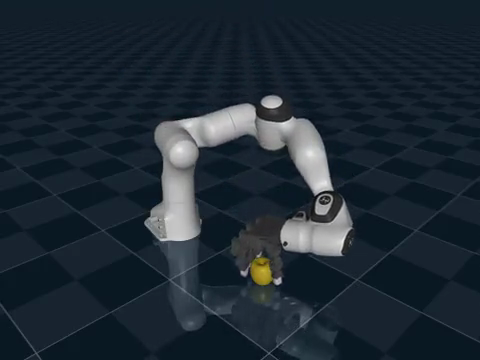
3 s descended, open
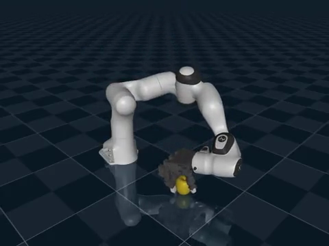
4.5 s closed
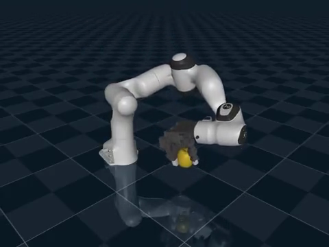
6 s lifted 15 cm
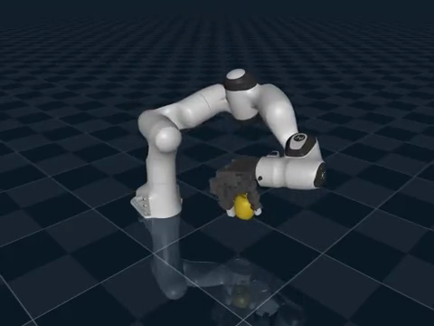
8 s end of hold
Every LEAP joint is a position servo: kp 3 N m/rad, torque capped at 0.28 N m, as on the real hand
The fingers close toward the grasp's closed angles, the apple stops them first, and the leftover angle error becomes a squeeze (peak 12.36 N in training)
That squeeze, times friction 0.7, carries the 180 g apple when the arm lifts
What counts as a pickup
Each placement runs one 8 s native MuJoCo episode at a 5 ms step; the last 2 s are the hold
4 training and 8 held-out placements, shared by apple and hammer: x 0.37 to 0.43 m, y within 3.5 cm, yaw up to ±2.8 rad, tilt up to 0.2 rad
Pass: object at least 10 cm above its start for the whole hold, hand contact in 99% of hold samples
No robot-floor contact all episode, no object-floor contact during the hold
At most 3 mm object-hand penetration, at most 0.02 rad joint-limit violation
Stock vs co-designed pickup
Stock: stock hand, default designed loss
Co-designed: spacer hand, refined loss and grasp
Passing placements, both: 4/4 training, 7/8 held out; held-out pose 6: its wrist waypoint is unreachable
Co-designed: lowest training hold 14.36 cm, peak training grip 11.79 N (stock: 14.28 cm, 12.36 N)
Hand, loss and grasp all change, so morphology alone is not isolated. One seed, 180 g apple, friction 0.7
Sparse vs designed loss
Same spacer hand, starting grasp and seed; 8 generations of 32 candidates each
Sparse: passes 0/4 training, 0/8 held out
Designed: passes 4/4 training, 7/8 held out
Sparse: reach the apple, apple above 10 cm, no drop
Designed: hold height, steadiness, drift, hand at least 2 mm off the floor
Sparse holds the apple at 13.73 cm, but the robot touches the floor
StagedController: library and pickup
robotl/handlers/mujoco/control/stages.py
@dataclass(frozen=True)
class Stage[T]:
"""Controller and observed goal with continuous dwell and a deadline."""
controller: Controller[T]
achieved: Callable[[EnvProcess], bool]
invariant: Callable[[EnvProcess], bool]
dwell_s: float
timeout_s: float
@dataclass(eq=False)
class StagedController[T]:
"""Advance after a sustained observed goal; fail on timeout or invariant loss.
Each call can advance at most one stage.
...
"""
stages: tuple[Stage[T], ...]
A stage is a controller, an observed goal, a safety invariant, a dwell and a deadline
Apple: approach, descent, grasp, lift, hold. The hammer replaces lift with clearance, lift, hold
Session runs the stages as a StagedController and keeps every native tick
Staged native control
A stage advances once its goal has held for its dwell (0.1 to 0.25 s; the hold stage needs 2 s) in the live simulation, counted from stage entry; it fails on its deadline or a safety check
Apple deadlines: approach 2.0 s, descent 1.6 s, grasp (thumb and a finger both loaded) 2.4 s, lift to 10 cm 4.0 s, hold 2 s
Safety checks every tick: no floor contact, Panda joint speed 2.175 to 2.61 rad/s, acceleration 7.5 to 20 rad/s²; commands projected against actuator range and Panda velocity limits
Same apple controls, 12 s replay: wrist peak acceleration 117 rad/s² at a 5 ms step, 13 at 2.5 ms
GraspPlan: search the hand, keep the arm
experiments/panda_leap_pickup.py
class GraspPlan(BoundedDensePlan):
"""Preserve the arm seed while sampling independent hand commands."""
arm_actuators: tuple[int, ...] = struct.field(pytree_node=False)
def with_params(self, params: jax.Array, spec: EnvSpec) -> Self:
indices = jnp.asarray(self.arm_actuators)
params = params.at[..., indices].set(self.x[..., indices])
return super().with_params(params, spec)
...
grasp_controller = controller(targets[2], grasp_transition_s)
grasp_controller = replace(
grasp_controller,
planner=replace(grasp_controller.planner, plan_init=grasp_plan_init),
)
The grasp stage's MPC samples plans over all 23 commands: 7 Panda joints, 16 LEAP joints
GraspPlan writes the arm seed back into the 7 arm columns of every sample, so only the 16 hand commands vary
Arm seed: a quintic blend from the issued command to the close waypoint over 1.5 s
Then the BoundedDensePlan bounds: clip to actuator range; arm commands also limited per step by the Panda velocity limits
Contact sensors and contact-directed objectives
Contact sensor: per body pair, a fixed number of contact slots (32 in pickup), each with force, distance, position and normal
Virtual sensor: a value computed from other sensor readings
Grasp check: thumb and fingers each hold half the object's weight by friction, with normals at least 120 degrees apart
Agent losses that read only the fixed base are refused; one such loss read zero all episode
More than 32 contacts in a pair: refused, not scored
No successful hammer pickup yet
Apple pickup: lifting on a carried grasp
YCB apple at the centre training placement, staged controller with the IK capture planner and the reduced contact sensors; capture admitted only if its wrench margin under servo limits covers the lift (needs 1.006). Stage times on this slide and the run slides through apple v12 are recording time, which starts 0.5 s before the trial clock
Whole episode, real time
End of the lift, 1/5 speed
Before: LIFT needed every finger to carry 10% of the apple's weight by friction, with a 20 ms recovery window. Fingers 0 and 2 flickered off 70 ms into LIFT, before the arm moved, and the run failed
Now LIFT and HOLD check a carried grasp: thumb support, the fingers' total and thumb-finger opposition. GRASP still needs every finger loaded, and the MPC loss still loads all of them
Two capture proposals admitted: wrench margins 1.08 and 1.43 held, 12.6 and 12.4 under servo limits. HOLD starts at 8.89 s with the apple at least 12.3 cm up
The run still ends with a failed invariant 35 ms into HOLD, so it does not count as a pickup yet. The carried check is uncommitted work built on #653
Screwdriver pickup: where capture fails
YCB Phillips screwdriver lying flat (metal shaft and CAB handle) at the centre training placement; same controller, IK capture planner and admission rule as the apple
Whole episode, real time
End of the episode, 1/5 speed
Best IK capture proposal: geometry cost 71,366 (the apple's admitted ones: 4.1 and 19.8); the predicted rollout dips 0.18 mm below the table, and the wrench margin is 0 against 1.006 needed. Not admitted
Predicted support penalties: fingers 0 and 2 at the maximum 1.0 (no load), thumb 0.45
CAPTURE fails its floor-clearance invariant 0.78 s in, at 4.53 s. No screwdriver pickup yet
Screwdriver pickup: reaching an admitted capture
Same screwdriver scene and staged controller; each run changes the capture plan. Close-ups at 1/5 speed, end of each episode. Stages: CAPTURE, then GRASP (all fingers loaded), then LIFT
Closing schedule, wrist first: first CAPTURE pass, 5.5 s; GRASP times out, thumb and finger 2 pinch only, 3.9 N
Preshape schedule + wrench-margin GRASP gate: CAPTURE 4.9 s, 24 N, but margin 0: the fingers press the handle into the table
Wrist yaw in the capture IK: first admitted capture; GRASP passes at 6.16 s; LIFT invariant fails at 6.9 s
Without wrist yaw, the hand's closing axis sat 34 degrees off the shaft
With it, the admitted capture's wrench margin is 1.46 held and 1.29 under servo limits, against 1.006 needed
No screwdriver lift yet; a second wrist-yaw run, on the next slide, gets further into LIFT. The schedules and capture-IK yaw are uncommitted work built on #653
Screwdriver pickup: the lift slips
A second run of the wrist-yaw setup: wrist yaw in the capture IK, preshape schedule and the wrench-margin GRASP gate
Whole episode, real time
End of the episode, 1/5 speed
CAPTURE 3.78 to 4.73 s; GRASP 4.73 to 6.41 s; LIFT starts at 6.41 s
The first capture proposal is refused at margin 0. Admission compares the margin under servo limits, and the second proposal passes: 2.05 against 1.006 needed. At the grip actually held the margin is only 0.40
The handle rises about 10 mm, then slips out of the fingers; LIFT fails 0.8 s in
Screwdriver capture: bunching the fingers
Pregrasp raised to 6 cm, arm IK for the wrist twist, 1 s HOLD settle. The run reproduces bit-identically on two machines
Run, end of GRASP, 1/5 speed: fingers spread 100 mm along the shaft
New capture plan, open-loop prediction from the same state: abduction in the IK, finger targets within 20 mm
Run: CAPTURE passes at 5.75 s; GRASP times out at 7.65 s with wrench margin 0.02 held, 0.12 under servo limits; finger 2 sits on the thin shaft; 19 N grip
New plan: the screwdriver stays put at 4 mm height throughout, where the previous plan's prediction tipped it; the rollout's dynamic cost falls from 58 to 11; the thumb lands on the side
The fingers still land on the upper flank of the handle; this is a prediction, not a run. Uncommitted work built on #653
Apple and mustard bottle: this round
Apple, co-designed grasp with closing schedules and a relaxed floor check; 1/5 speed
Mustard bottle, default grasp at the bounding-box centre; real time
Apple: CAPTURE passes at 5.05 s (wrench margin 1.36 held, 7.9 under servo limits; 22 N grip), then GRASP times out on the all-fingers-loaded rule. The carried check from the earlier apple slide is not in this run
Bottle: 37 N grip but the capture terms flicker and the wrench margin is 0; CAPTURE times out. Both runs use uncommitted work built on #653
Apple pickup: a grip-hold term
YCB apple, co-designed grasp, IK capture with wrist twist and closing schedules. GRASP ends on the carried terms (not every finger loaded) plus the margin under servo limits. In LIFT and HOLD the MPC loss adds a grip-hold term: a penalty on hand-control drift over the horizon, so the hand keeps the grip it formed while the arm lifts
Whole episode, real time
End of the lift, 1/5 speed
Stage ends in recording time: CAPTURE 5.11 s, GRASP 5.45 s, LIFT 7.76 s. Admitted captures: wrench margins 1.33 and 1.93 held, 10.0 and 9.9 under servo limits
The apple rises 11.9 cm at a peak grip of 19.6 N
HOLD fails 42 ms in on the arm motion invariant: blending the arm to its hold pose over 0.1 s drives joint 2's acceleration from 0.03 to 1.01 of its limit, with the apple still rising. Not yet a counted pickup; the runs on the next slide settle HOLD over 1 s instead. Uncommitted work built on #653
Capture IK over all hand joints: a 31 mm screwdriver lift
The capture IK now solves all 16 hand joints with the finger targets bunched within 20 mm; pregrasp raised to 6 cm and a 1 s HOLD settle. Close-ups at 1/5 speed, end of each episode. Times in recording time
Screwdriver, run A: GRASP passes; LIFT from 6.68 s raises it about 31 mm
Screwdriver, run B: 41 N grip squeezes the handle into the table; margin 0, GRASP times out
Apple: LIFT from 5.63 s, then a stage invariant fails; 9 N grip
Run A: during LIFT the margin under servo limits decays from 1.19 to 0 as the pads rotate with the rising hand (grip stays 10-12 N), then a stage invariant fails
Apple: the first capture is refused (margin 0.07 under servo limits); the re-planned one is admitted at margins 1.86 held, 14.8 under servo limits. It fails before HOLD, a regression from the 11.9 cm lift on the previous slide, likely because the raised pregrasp changed the capture
Run A ends on a failed stage invariant, so it is not a counted pickup yet. Next: LIFT and HOLD seed the hand 0.15 rad past the contact pose for a servo-saturated squeeze. Uncommitted work built on #653
Capture planner v4 and v5: capture passes, GRASP does not
Close-ups at 1/5 speed, end of each episode; times in recording time. Right: a static IK pose, not a run
Screwdriver, v4 default plan: CAPTURE passes at 5.08 s; GRASP times out at 30 N, margin 0
Screwdriver, v5 plan yawed -0.98 rad: CAPTURE passes at 4.78 s; GRASP times out at 28 N, margin 0
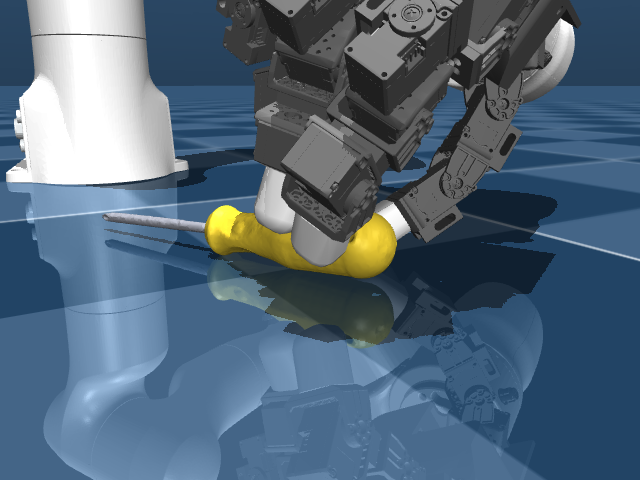
Best across-handle IK pose at the yawed state: thumb and finger 0 on opposite sides
That pose has a static cost of 8.6 and a 45 mm pinch span. The thumb and finger 0 oppose each other across the handle, at pad heights of 16.6 and 27.5 mm near the grasp point 16 mm above the table; fingers 1 and 2 sit on the upper flank at 37 and 51 mm. Its closing rollout scores about 190 because the planner's score requires every finger loaded
Apple on v4: the planner picked a preshape schedule that compressed an 8 cm wrist descent into 0.4 s; the arm motion invariant failed 0.3 s into CAPTURE. v5 stretches the schedule and scores arm limits
Next: score the rollout on the carried terms that gate GRASP (thumb, finger total, opposition) instead of per finger. Uncommitted work built on #653
Apple pickup: first complete pickup
YCB apple, co-designed grasp, capture planner v6: capture IK over all 16 hand joints with the wrist twist from an arm IK; closing schedules ranked on the carried terms and arm limits; the wrench-margin GRASP gate; grip hold and a 0.15 rad squeeze in LIFT and HOLD; a 1 s HOLD settle
Whole episode, real time
End of HOLD, 1/5 speed
Stage starts in recording time: CAPTURE 3.71 s, GRASP 4.94 s, LIFT 6.13 s, HOLD 8.37 s. Admitted captures: wrench margins 0.52 and 1.37 held, 4.4 and 5.2 under servo limits
The apple stays at least 12.9 cm up through the whole 2.0 s HOLD, with no table contact; peak grip 28 N, penetration 1.0 mm
One run, one placement (the centre training pose). Uncommitted work built on #653
Apple pickup: a near miss with an ALIGN dwell
Same co-designed grasp and v6 planner as the complete pickup, plus a 0.5 s dwell in ALIGN, the stage that lines the hand up over the apple before CAPTURE
Whole episode, real time
End of the episode, 1/5 speed
Stage starts in recording time: CAPTURE 4.52 s, GRASP 6.12 s, LIFT 7.97 s, HOLD 10.40 s. Admitted captures: wrench margins 0.93 and 1.91 held, 3.1 and 3.1 under servo limits
The apple stays at least 12.2 cm up for 1.4 s of the 2.0 s HOLD, then squeezes upward out of a two-pad pinch (thumb and one finger) and drops; peak grip 22 N
Nothing in the run ties the drop to the dwell; it may be a second sample of the v6 planner failing in HOLD. Not a pickup: the complete run on the previous slide is still the only one. Uncommitted work built on #653
Screwdriver after the apple pickup: no lift yet
Phillips screwdriver, grasp plan yawed -0.98 rad. Close-ups at 1/5 speed, end of each episode; times in recording time
v7 (v6 + ALIGN dwell): capture admitted and LIFT reached, but the handle never rises
v8, capture search posed from the closed hand: penetration failure 0.3 s into CAPTURE
v9, v8 + two-finger gate + downward pad penalty: the same failure at the same tick
v7: CAPTURE from 4.48 s; the second capture is admitted (wrench margins 1.66 held, 2.25 under servo limits); GRASP from 5.73 s, LIFT from 7.13 s. The fingers press the handle from above with the thumb on the pommel end; the thumb loses contact 0.35 s into LIFT; 34 N grip
v8 and v9: neither capture is admitted (margin 0); penetration reaches 3.0 mm and fails the invariant
v8 onward is reverted to build on the planner that lifted the apple; next is v12: v6 plus the two-finger gate, ranking capture proposals by whether they would pass admission. Uncommitted work built on #653
Screwdriver, v12: second capture proposal refused
Phillips screwdriver, back on the default co-designed plan (v7 to v9 used the plan yawed -0.98 rad), so both planner and plan change. v12 is the planner that picked up the apple plus a gate needing two loaded fingers and ranking capture proposals by whether they would pass admission. Times in recording time
Whole episode, real time
End of the episode, 1/5 speed: the hand clamps the handle from above, thumb pad on the near side
CAPTURE from 3.72 s; the first capture is admitted at wrench margins 0.33 held, 1.27 under servo limits
GRASP from 4.94 s; the second capture proposal, planned as GRASP starts, is refused (0.46 held, 0.51 under servo limits, dynamic cost 4181) and GRASP times out; 21.7 N grip, 1.4 mm penetration
No lift. The new ranking checked penetration at every rollout tick, so this run took 75 min of wall time. v12b checks it every 0.2 s instead: the same proposals and the same failure in 19 min. Uncommitted work built on #653
Apple, v12: the GRASP gate does not release
YCB apple, co-designed grasp, the same v12 planner as the previous slide. Times in recording time
Whole episode, real time
End of the episode, 1/5 speed: the apple is gripped but still on the table
CAPTURE from 3.71 s, GRASP from 5.27 s; both capture proposals admitted, at wrench margins 0.59 and 4.54 held, 1.52 and 4.31 under servo limits
GRASP times out at 7.67 s with a 22 N peak grip, so LIFT never starts. Replaying the run, the margin under servo limits reads exactly 0 at many sampled times during GRASP (5.80-6.30 s, 6.45-6.50 s, 6.95-7.05 s) while the grip stays at 4-20 N. From 7.30 to 7.55 s every gate term holds at 25 ms resolution and the margin is 1.8-2.5, longer than the 0.15 s GRASP dwell, yet GRASP does not release; finger 0's support term then flickers off at 7.58 and 7.63 s. The GRASP dwell restarts on any single failing tick. Next: a per-tick trace of every gate term and the margin over 7.30 to 7.55 s, to see what fails between the 25 ms samples. Uncommitted work built on #653
Upright hammer pickup: the task
Same Panda + LEAP and staged controller; pick up the 665 g YCB hammer and hold it head-up
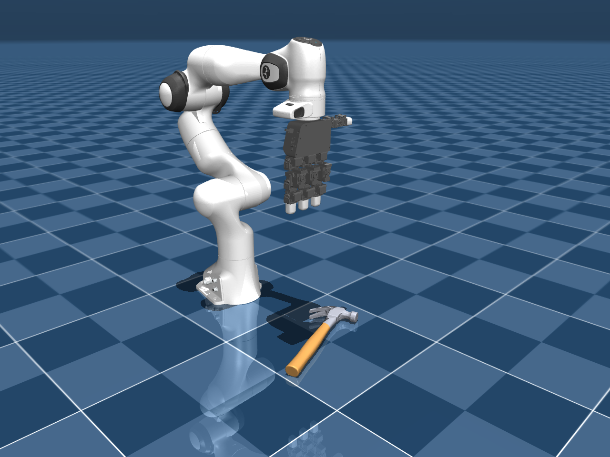
Starting scene
Pass: head bottom above 10 cm, whole hammer above 2 mm, handle-to-head axis within 15 degrees of vertical, through the final 2 s hold including both endpoint samples
Grasp target: fingertip pads centred on the grasp point, opened 40 mm above it first
Stages after the grasp: swing clear of the floor, lift, hold; turning upright waits until the hammer can clear the floor
Time limits per stage: grasp 8 s, clearance 3 s, upright 4 s, inside a 20 s cap
Upright hammer pickup: where it fails
Center training placement, collision-pad grasp target
First pilot, stock-hand grasp, waypoint tracking plus a height term, 2 samples per replan: descent times out at 3.315 s
With the collision-pad target (video): the arm reaches the hammer, but the grasp stage times out at 70% hand contact and 23 N peak grip
Thumb and fingers never carry the hammer's weight for the 0.15 s grasp dwell, so lift never starts
No successful hammer pickup yet
Compiled MPC plan following
Two-link test arm, one generated director proposal, 0.902 s simulated
Per-tick JAX ops16.676 s
One jitted plan-following call1.934 s
1.934 s = 1.206 s preparation + 0.728 s simulation
Same actions and plans after each shift, to 1e-12
Small-arm measurement; Panda throughput not yet measured
Batched native runner
A runner simulates a batch of control sequences from one starting state and returns their trajectories; the MPC calls it to score its sampled plans
#634 moves Panda pickup onto the shared runner from #561: one per compiled environment, for planning rollouts, single steps and forwards, callable inside jit and vmap
Timing probe: Panda + LEAP apple scene, 5 ms step, 16 rollouts in one batch, 16 threads; median of 3 timed runs
Old runner, 80 steps (0.4 s)28.8 ms
New runner, 80 steps21.0 ms
Old runner, 600 steps (3 s)79.6 ms
New runner, 600 steps103.8 ms
Old: eager JAX state packing, then mujoco.rollout. New: jitted packing around the same native call. Both return identical states
80 steps: 27% less time
600 steps: slower in every run (new 282.7, 103.8, 95.6 ms; old 93.8, 78.6, 79.6 ms). The cause is not yet diagnosed
Reading recorded trajectories
The design agent reads recorded pickup trajectories from its REPL
Before: each of 2,231 observations was stacked into JAX one frame at a time; the live agent trace spent minutes there
Now: NumPy packs a batch, which is converted to JAX once; all 2,231 joint-position, velocity and control rows keep exact float64 values
No timing after the change was recorded, and no controller speedup is claimed
Panda branches: status
#599openPanda and LEAP assembly; the pickup stack from #603 to #638 folded in
#647openPhillips screwdriver as a metal shaft and a CAB handle
#651draftTolerate one-tick support flicker during lift and hold
#653draftGate pickup on the wrench margin its contacts can carry, on #651
01Panda arm YCB pickup
02OPH on a motor-driven wrist
Driving OPH with two XL430 motors
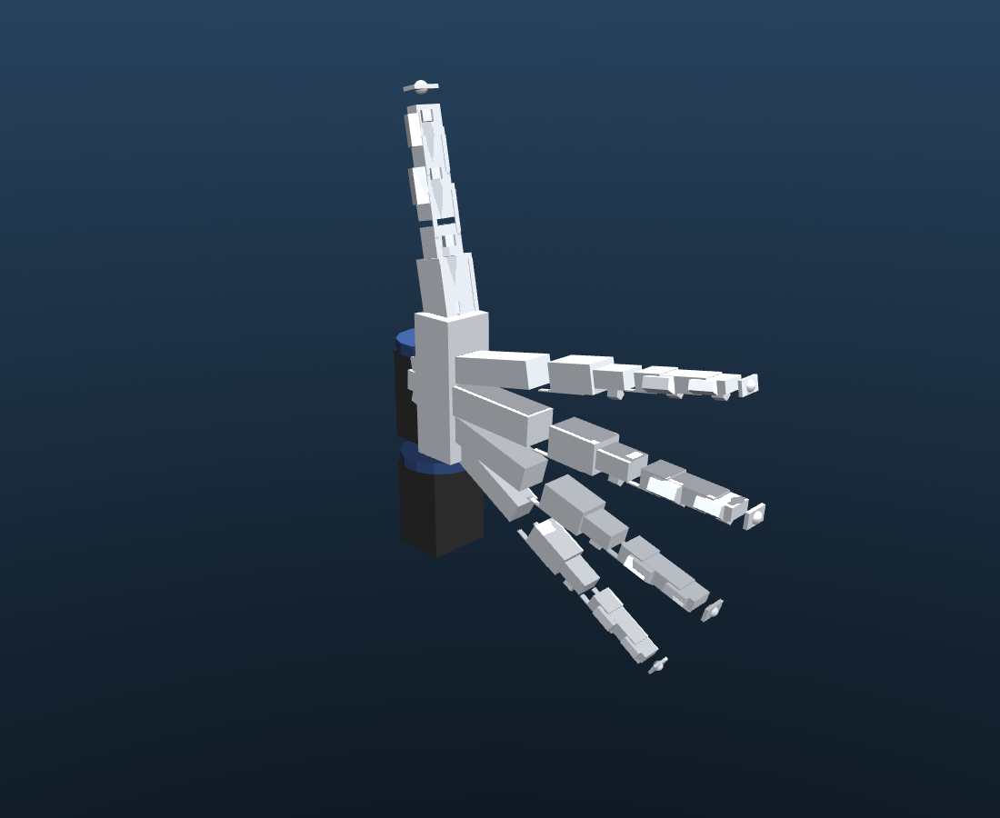
Scripted motor ramps, gravity off
Two XL430-W250 at 11.1 V: 1.4 N m stall, 57 rpm
Each motor pulls one tendon mixer: motor 1 all distal flexors; motor 0 the thumb and index middle joints and thumb opposition
Tendons pull only, with fixed moment arms; gains are assumed, not calibrated
Palm-up OPH
5 cm cube on the palm, two-axis wrist, motors behind the palm. Task: turn the cube to a target orientation in 6 s
Held-out random target, controller seeds 11 and 22, 6 s, MPC with a 1 s horizon, orientation loss with an angular-velocity damping term
Selected: 95.05 degrees final error, dropped 1 of 2. Base: 28.03 degrees, dropped 2 of 2 (same base in the loss study: 12.00 degrees, dropped 0 of 2)
No clear improvement over the base
The Stretch Dex wrist
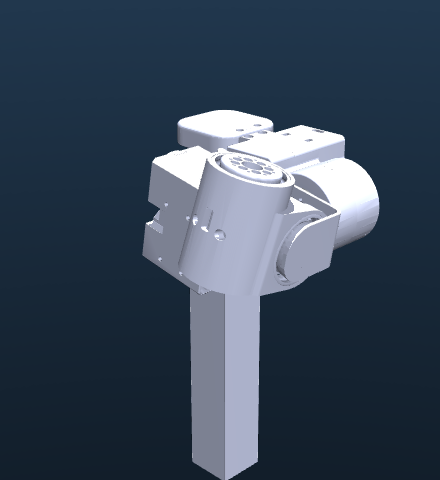
Visual CAD
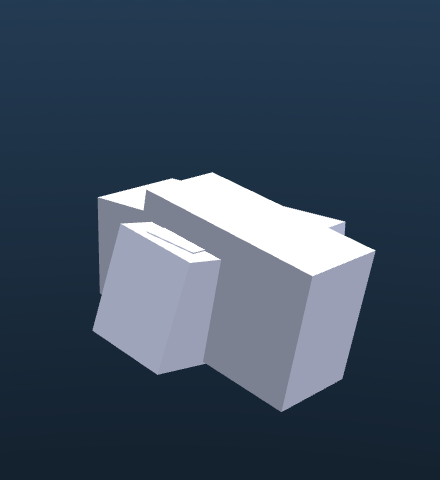
Collision
Hello Robot Stretch RE1 Dex wrist: geometry, inertias and joint frames from the published URDF
Yaw XL430 with a 2.4 reduction, pitch XM540, roll XM430
Drives are documented approximations; the pitch current limit is not modeled
OPH on the Stretch wrist
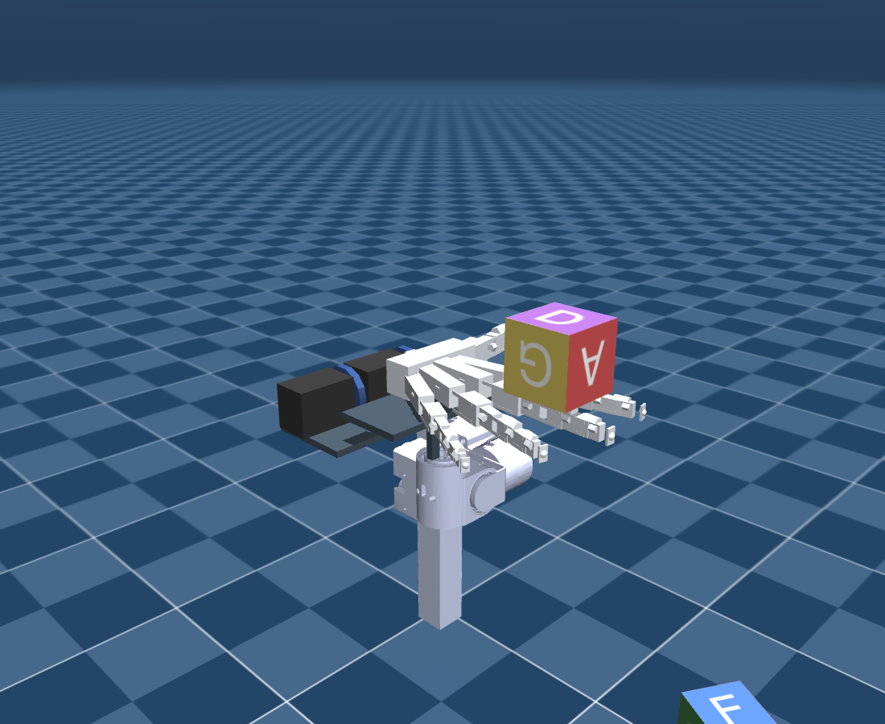
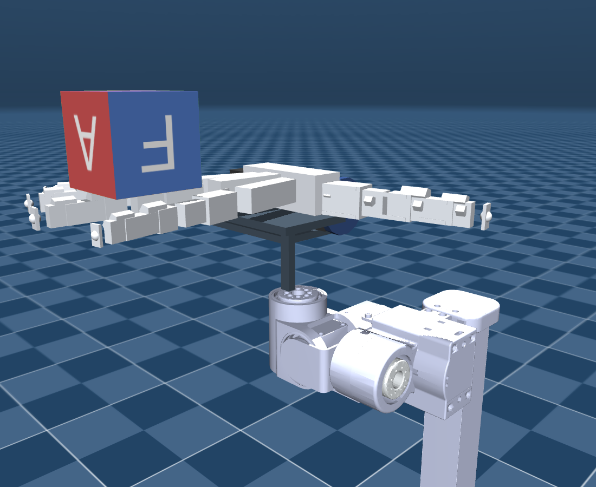
Bracket: a plate on the wrist flange, a column to the palm, shelves under both motors
Motors set 12 mm back so the spools clear
The printed bracket is an unvalidated prototype
Co-designing the mount
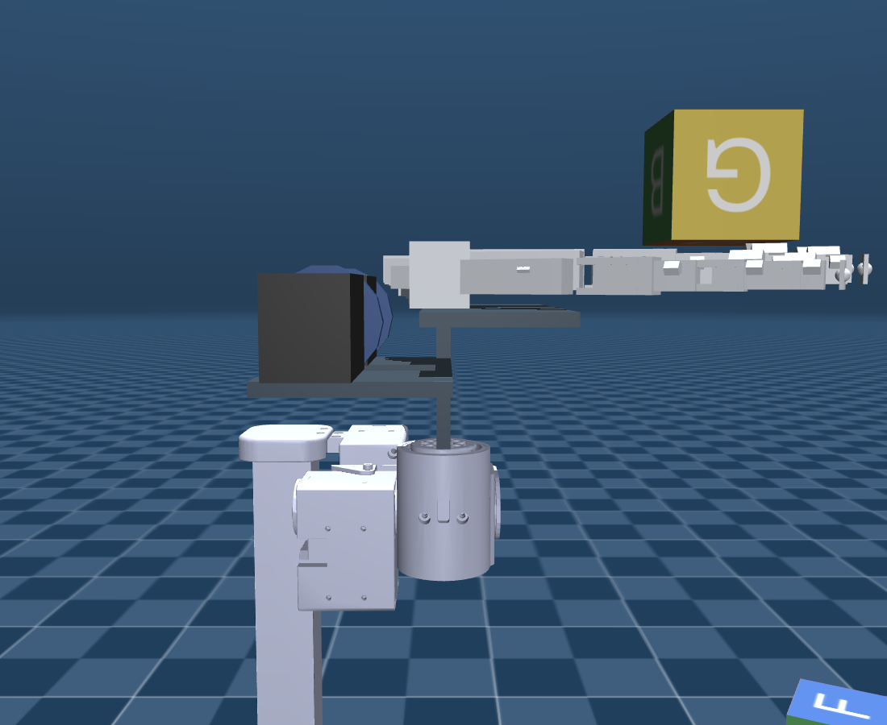
Stock: palm 75.5 mm above the flange
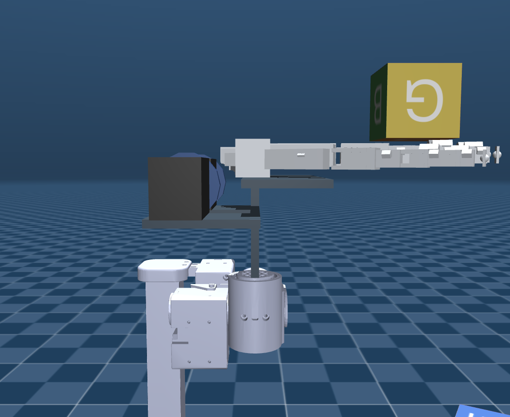
Raised: 90 mm, admitted
Floating: column ends 25 mm short, refused
Admitted only if the mount meets the flange, palm and motors seat on it, mount and palm are one piece, and the hand clears the wrist by 1 mm on a sampled joint grid
Wrist command envelope
Command limits in rad. Stock: yaw and roll ±0.35, pitch -0.25 to 0.15. Shown: the stock 75.5 mm mount posed at the widened yaw and roll ±0.5
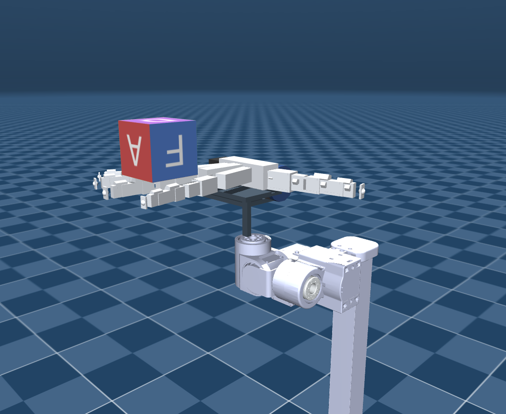
Neutral
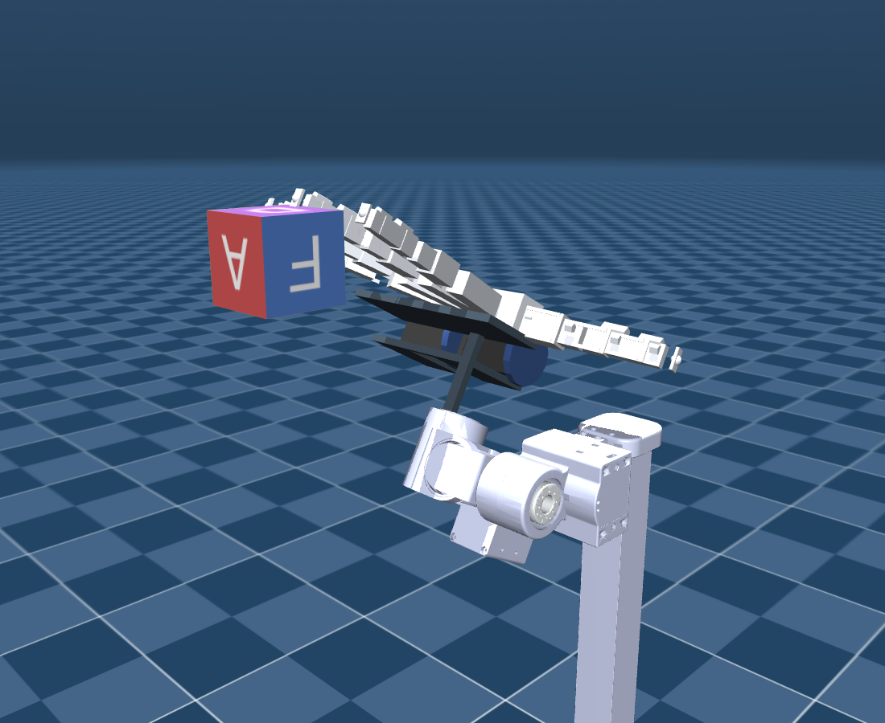
Yaw -0.5
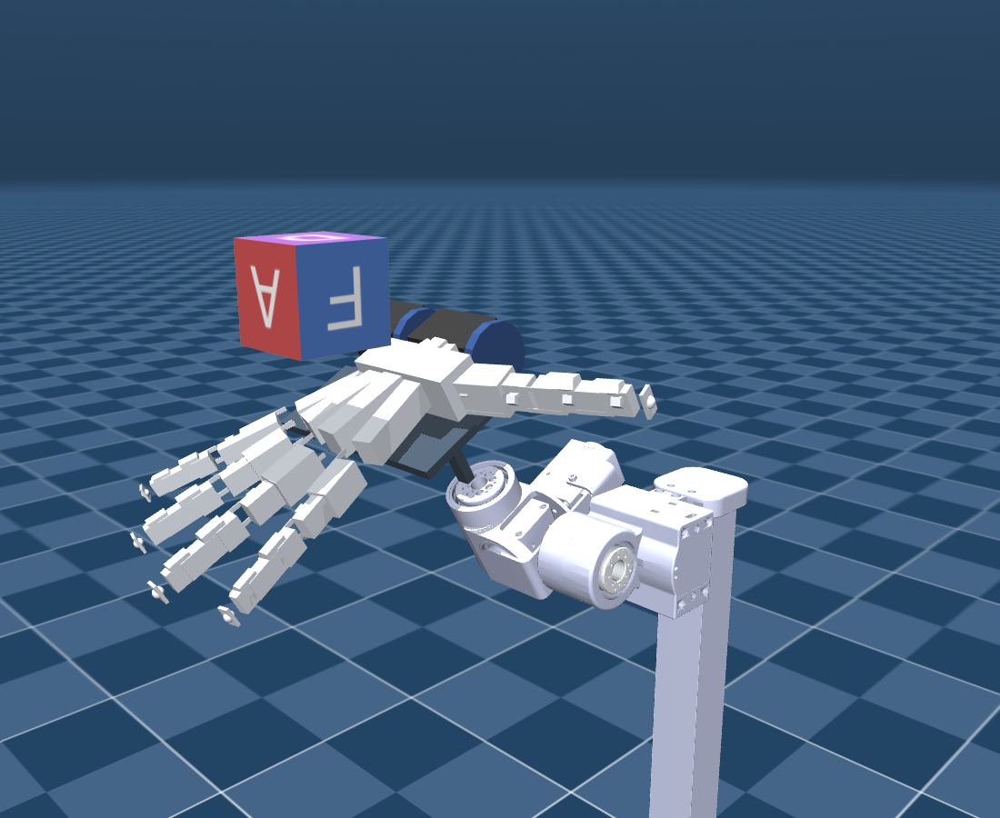
Yaw +0.5
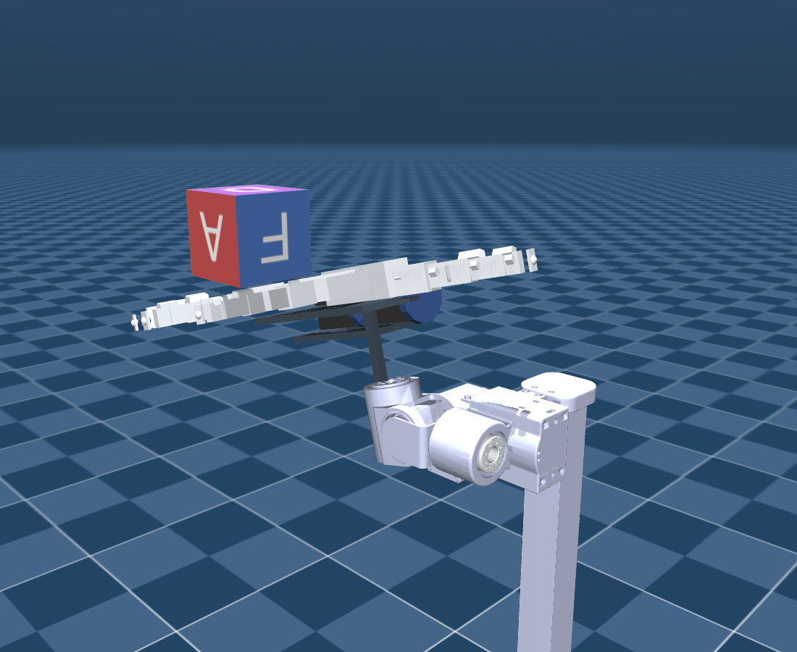
Pitch -0.25
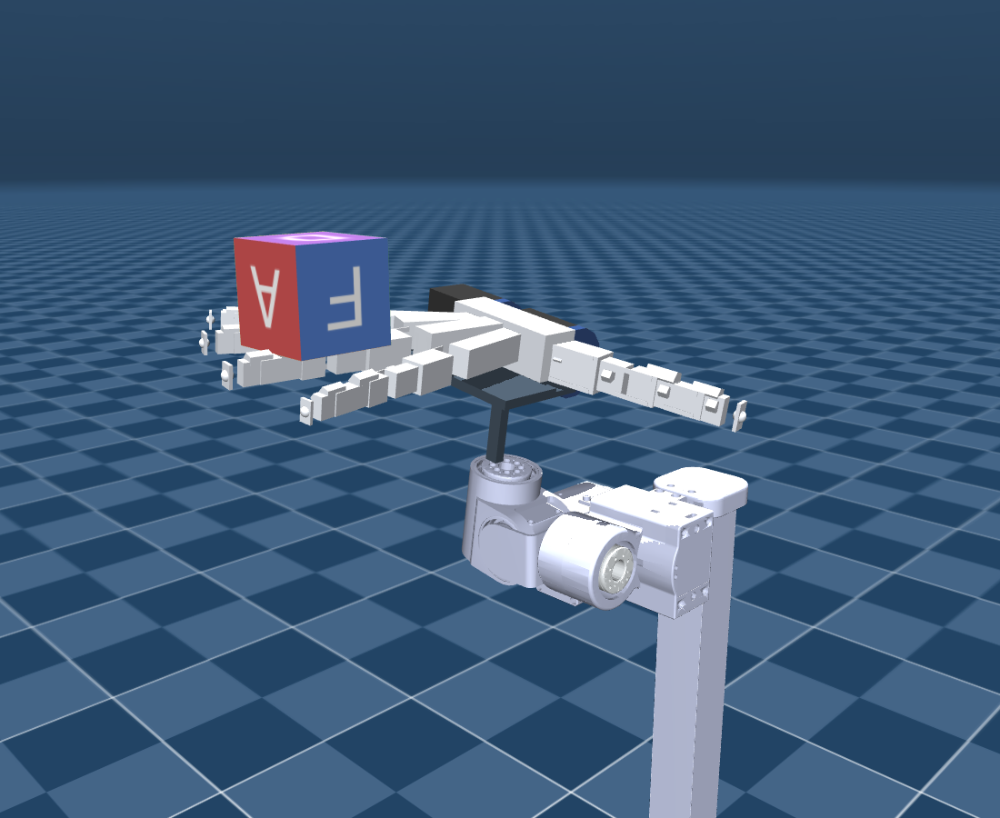
Pitch +0.15
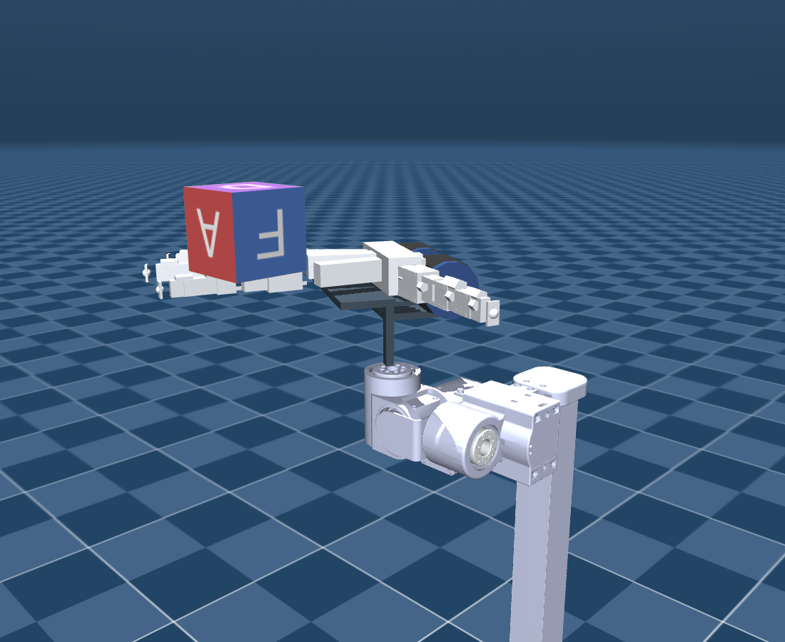
Roll -0.5
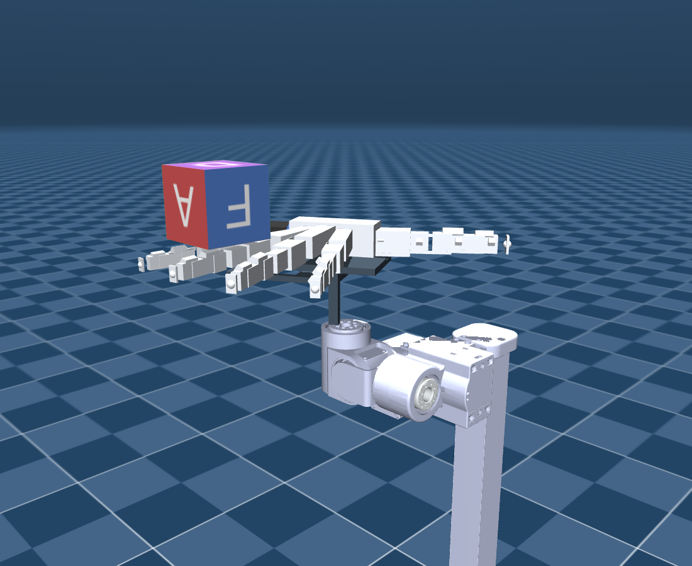
Roll +0.5
±0.5 is admitted on the 90 mm raised mount; on the stock mount, pitch +0.25 is refused: the hand comes within 1 mm of the wrist
Joint angles set directly, no simulation
Stronger same-envelope motors
Same 28.5 x 46.5 x 34 mm housing; at 11.1 V
XL430-W250, 57 g1.4 N m, 57 rpm
XM430-W210, 82 g2.7 N m, 70 rpm
XM430-W350, 82 g3.8 N m, 43 rpm
One motor model for both mixers; the search cannot change it
Stall torque is not a continuous rating; current and thermal limits not identified
Selection and capture-first loss
4 training and 4 held-out random targets, controller seeds 11 and 29, 1 ms step, 6 s episodes
Keep a design only if both orientation errors (episode mean and final) drop, drops do not rise, and at least one training run keeps the cube
New loss: chase orientation only once both mixers pass 0.45 rad, thumb and fingers carry load, and the cube is within 4 cm of its hold position
A closure term pulls both mixers toward 0.8 rad, 20x stronger until the cube is supported
Retention run in progress; capture-first has two single-seed comparisons so far
Sparse vs capture-first loss
Palm-up OPH on the Stretch Dex wrist: turn the cube to target 0, a random orientation, in 6 s at a 1 ms step. MPC: 1 s horizon, 16 samples x 2 rounds, replan every 40 ms; both runs start with the mixers seeded at 0.8 rad
Seed 11
Sparse: drops
Capture-first: retains
Seed 29
Sparse: retains
Capture-first: drops
Sparse: orientation error plus a drop penalty. Capture-first: orientation counts only once the cube is held (previous slide)
One target, two seeds, one win each: no evidence yet that capture-first retains the cube more often
OPH source (dof4_config in digits.scad): the metacarpal sits flat on the palm and the MCP is a 2-DOF ball
Before, the whole digit swung at the palm port and the MCP moved 40.6 mm; now the metacarpal is welded and the MCP stays put
Abductor and adductor cables act on the MCP hinge at half the joint width, where the source mounts their pulleys
Drawn cables and joint-to-joint bones
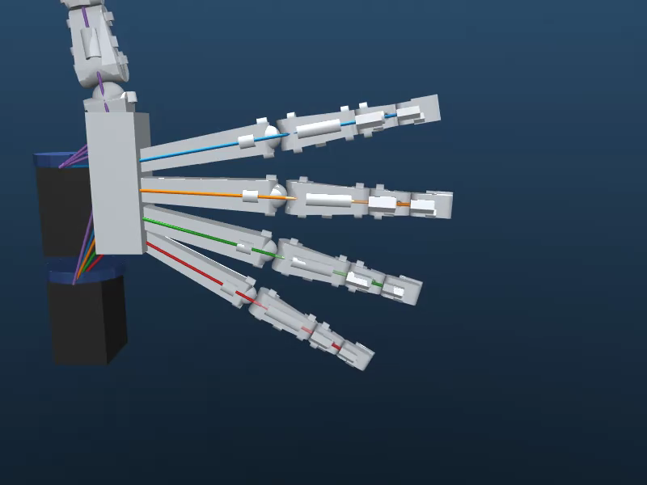
Printed OPH bones; cables coloured by digit
Fingers curl and release
Fixed tendons were never drawn; each cable is now drawn through every joint it crosses, offset from the axis by its moment arm
Each bone shaft spanned -0.3L to 0.7L, leaving a gap at every knuckle; it now runs joint to joint. Contact shapes change, so earlier study results don't carry over
The printed bones are visual only; contact still runs on the parametric shapes
Releasing compiled code with its owner
polly, effectful at master: memory mappings added by 4 OPH spatial-cable builds in one process
main+9,986
#649+0
A module-level jax.jit caches one executable per static-argument hash for the life of the process. Layout hashes by identity, so each build left a dead entry: about 2,500 mappings
An eager pure_callback outside jit is cached by its closure, which held the rollout pool
robotl/internals/utils.py, jit_for
def jit_for(instance, fn, **jit_kwargs):
jitted = vars(instance).setdefault("_jit_methods", {})
key = (fn, tuple(sorted(jit_kwargs.items())))
if key not in jitted:
jitted[key] = jax.jit(functools.partial(fn, instance), **jit_kwargs)
return jitted[key]
The rollout packers and SamplingPlanner compile per instance, so the code goes with its layout or planner; concrete rollout inputs call the host directly
Panda MPC on polly, 40 replans: memory plateaus at 15 GB with #649; without it the run is killed at 30 GB after 17 replans
Both are JAX caching bugs, reported as jax#41388; this works around them. Tests check that building, using and dropping environments and planners leaves no mappings
Co-design on the solid-bone hand
Same task and MPC as the Sparse vs capture-first slide. gpt-6-astra proposes a hand and a loss; each pair runs 4 training targets x controller seeds 11 and 29 = 8 episodes. Error: degrees from the target at 6 s, lower is better, 180 at most
Hand
What changed from the base
Loss
Held
Mean error, all 8 (drop = 180)
Base
OPH on the Stretch wrist, two XL430
capture-first
8/8
128.4
lateral thumb
thumb metacarpal 25 to 60 mm, root 30 mm further out, re-angled
capture-first
0/8
180.0
forward thumb
thumb root moved 63 mm forward
capture-first
4/8
150.7
seated compact
finger metacarpals 74-82 to 29-37 mm; thumb metacarpal 25 to 10 mm, re-angled
capture-first
0/8
180.0
inward compact
seated compact with a different thumb angle
capture-first
0/8
180.0
inward compact
same hand
supported rotation
2/8
158.4
inward compact
same hand
persistent grasp
2/8
164.5
enclosing compact
inward compact; ring and little splay 16, 30 to 8, 16 degrees; thumb tip 25 to 40 mm
persistent grasp
8/8
134.3
enclosing compact
same hand
gentle opposed grasp
8/8
138.9
The three new losses add a thumb-reach term and loosen the hold radius from 4 to 12 cm; gentle opposed grasp also closes the mixers to 0.5 rad instead of 0.8
No proposal beats the base, so the search keeps it. The base turns the cube on target 3 (48 and 46 degrees for seeds 11 and 29) and barely on the other three (142-163); on held-out targets 4 to 7 it holds 8/8 at 134.6
Solid-bone hand: training target 3
Each clip: wide view left, close view right; 6 s. Error at 6 s in degrees
Base, capture-first, seed 11: holds, 48
Inward compact, capture-first, seed 11: drops at about 4 s
Under capture-first the compact hand never keeps the cube; under supported rotation it holds only on target 3, and still ends further from the target than the base
Inward compact hand: another target
Training target 1, supported rotation loss, controller seed 11
The cube leaves the palm within about 2 s
The same hand and loss drop on targets 0 to 2 for both seeds; both of its holds are on target 3
Co-design with cable assignment
Solid-bone OPH. The agent may also choose each mixer's X430 motor and put any digit cable (distal or intermediate flexor, MCP splay) on any motor. Shorter protocol: training targets 0 and 5, controller seed 11, held-out target 1; 8 proposals, 6 s episodes. Two sessions, on polly and rolly. Error in degrees, lower is better
Session
Hand
Loss
Target 0
Target 5
Mean at 6 s
Episode mean
Held
both
stock
capture-first
161.9
174.5
168.2
161.5
2/2
polly
opposed power grasp
capture-first
154.0
172.8
163.4
160.4
2/2
polly
opposed power grasp
hand-relative supported
131.9
175.8
153.9
152.1
2/2
polly, control
stock
hand-relative supported
158.3
157.2
157.8
159.1
2/2
rolly
stock
contact capture
159.0
158.3
158.7
156.7
2/2
Selection: lower mean error at 6 s and over the episode, with no more drops than the stock pair. polly selects the opposed power grasp with the hand-relative supported loss, rolly the stock hand with contact capture; every proposal not in the table dropped the cube on at least one target. The control row was run after the search
From two episodes each: polly's gain is almost all on target 0, rolly's mostly on target 5; the cube still ends far from its target
Cable co-design: the three polly pairs
Rows, top to bottom: stock hand with capture-first, new hand with capture-first, new hand with the new loss. Wide view left, close view right with cables in each digit's colour; the small floor cube shows the target
Target 0: 162, 154, 132
Target 5: 175, 173, 176
On target 0 only the bottom row turns the cube: faces G and B come up while the other two still show A
The selected cable design
Anatomy: the thumb opposes the fingers, mounted 140 mm out on a bar the agent added to the palm
Motors: mixer 0 becomes an XM430-W350 (3.8 N m stall); mixer 1 stays the stock XL430-W250 (1.4 N m)
Cables: the middle, ring and little intermediate flexors move onto mixer 0, so their passive springs become motor-driven cables
New loss: the same support gate on thumb and finger contact, but the hold is measured relative to the knuckles instead of the cube's starting position, so a closing grip no longer switches the orientation term off
Needs review: the factory replaces the built palm with a union adding a 152 x 12 mm bar. Admission accepted it, but it bypasses the palm builder and nothing checks the bar is printable or strong enough
How the agent got there
Read from polly's Langfuse trace: code it ran and status notes it wrote (reasoning summaries came back empty)
Step 9: thumb load is zero all episode. The starting loss enables orientation only once every digit group carries 0.1 N and the cube stays within 4 cm of its start
Steps 11-27: six thumb relocations and one loss tweak, all dropped the cube; three layouts refused for collisions or a disconnected mount
Step 28: an opposed thumb on the added palm bar gets thumb and finger contact 26% of the time; middle and ring knuckles bend backward
Step 29: three intermediate flexors on a stronger mixer 0. The first design to keep the cube on both targets; support 42-58% of each episode
Steps 30-31: the grip pulls the cube more than 4 cm from its start, keeping the gate shut. The agent writes the hand-relative loss: the selected pair
Cable co-design: the loss alone
Control after the search: the stock hand with each loss on the two training targets. Top: capture-first; bottom: hand-relative supported. Wide view left, close view right
Target 0: 162 to 158
Target 5: 175 to 157
On the stock hand the new loss lowers the error at 6 s on both targets. Against the selected pair it is worse on target 0 (158 vs 132) but better on target 5 (157 vs 176); the pair wins on the two-target mean, 154 to 158, and over the episode, 152 to 159
Cable co-design: held-out target 1
polly, all four hand and loss pairs, one episode each, run after the search. Video: top row stock hand, bottom row new hand; left original loss, right new loss
Hand
Loss
At 6 s
Episode
stock
capture-first
161.3
156.9
stock
hand-relative
160.4
155.3
new
capture-first
160.6
143.0
new
hand-relative
165.9
146.4
None of the four drops the cube. Against the baseline, the new hand lowers episode error by 14 (original loss) and 10 degrees (new loss); the new loss on the stock hand by under 2
Both new-loss runs roll the cube onto a new face, but only the new hand keeps the error low all episode
The selected pair is 10 degrees better over the episode but 5 worse at 6 s, so it fails the selection rule here. Both other pairs beat the baseline on both metrics, the stock hand with the new loss by under 2 degrees, which one episode cannot resolve. rolly, against its own run of the baseline (160.1 at 6 s, 156.9 episode): its loss-only pick 159.0 and 161.7
Second cable co-design run: held-out target 1
A third session, on Dat's Mac. Same protocol (training targets 0 and 5, controller seed 11, held-out target 1), but the search starts from the stock hand with the hand-relative supported loss. Selected: an opposed-thumb power hand with the agent's rotation-priority supported loss. One episode per cell; error in degrees at 6 s / over the episode
Hand
Loss
Target 0
Target 5
Held-out target 1
stock
hand-relative (start)
164.1 / 164.6
149.5 / 152.0
160.8 / 156.5
opposed power
hand-relative
161.7 / 148.0
148.4 / 150.8
149.9 / 147.6
stock
rotation-priority
dropped
dropped
dropped
opposed power
rotation-priority (selected)
167.4 / 152.7
84.5 / 155.0
154.7 / 146.5
As in the first run, the new hand carries over: about 9-10 degrees lower episode error on target 1 with either loss. The agent's loss alone drops the cube on the stock hand
The error curves stay flat near 150 degrees: the cube never really turns. The selected pair's 84.5 on target 5 is the next slide
Second cable run: a low error that is a release
Training target 5, two camera views per clip; 6 s
Stock hand, start loss: 149.5 at 6 s
Selected pair: 84.5 at 6 s
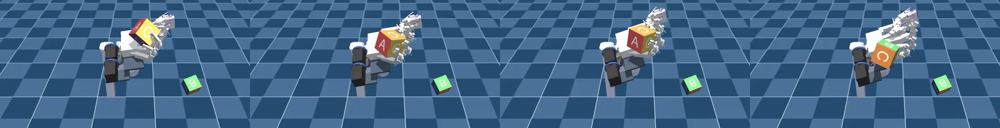
Selected pair at 3.0, 5.3, 5.7 and 5.9 s
By 5.9 s the cube is tipping off the hand, and it rolls off in the last 0.1 s: that gives the 84.5, and it is not scored as a drop. The pair passes the selection metrics nominally without a real turn; next change: a release at episode end counts as a drop
OPH co-design: an 80 degree turn that stays in hand
Another cable co-design session, on rolly. Training target 0, controller seed 11, 6 s at a 1 ms step under MPC; hand-relative supported loss. Two camera views per clip
Starting pair, power-grasp hand: 178 at 6 s, 154 over the episode
Agent's hand, thumb moved toward the palm: 89 at 6 s, 115 over the episode
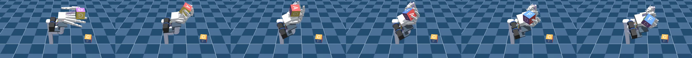
Agent's hand at 0, 1.2, 1.6, 2.0, 4.0 and 6.0 s: faces G, then A, then F come up
The error falls from 167 to 89, a turn of about 80 degrees, and the cube stays in the hand; rerun at half the step (0.5 ms), it ends at 89.9 and 124.2 over the episode, so the turn is not a timestep artifact
It does not reach the target face, and it does not carry over (at 6 s / over the episode): training target 5, 148.0 / 151.9 against the starting pair's 146.9 / 148.9; held-out target 1, 140.6 / 146.7 against 129.2 / 149.1. Worse at 6 s on both; the 2.4 degree episode gain on target 1 is smaller than the 9 degree swing the half-step rerun shows
OPH co-design: two thumbs on a third motor
A fourth session, on Dat's Mac. Starts from the stock hand with a loss that scores orientation once any part of the hand touches the cube; same targets. Selected hand: a thumb on each side of the finger row, with both thumbs' flexor and intermediate cables on a third motor (XM430-W350); loss unchanged
Stock hand, target 5
Two thumbs, third motor, target 5
Target
Stock
Selected
0
157.2 / 152.7
149.2 / 152.3
5
122.9 / 128.2
107.8 / 111.8
held-out 1
dropped
121.4 / 117.6
Degrees at 6 s / over the episode; controller seed 11
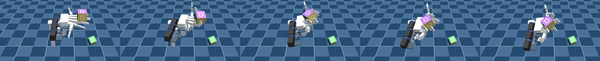
Selected hand on target 5 at 0, 1.0, 1.9, 3.0 and 6.0 s: face D stays on top
The first selected pair that beats the stock hand at 6 s on both training targets (a 0.4 degree tie over the episode on target 0) and holds the cube on the held-out one; under this touch-gated loss the stock hand drops it there
It wins mainly by not dropping: an enclosing grasp that holds the cube rather than turning it. On target 1 the cube starts about 102 degrees off and ends at 121
OPH branches: status
#642mergedX430 motor model on main
#591openPalm-up OPH co-design; #597 and #609 to #646 folded in
#649openRelease compiled code with its layout or planner, against main
#650draftCo-design OPH motors and independent fingers, on #591
#652openAbduct OPH fingers at the MCP, against main
#654draftCo-design with MCP abduction, on #650
#655openDraw tendons; joint-to-joint and printed bones, against main
#656openSolid-bone co-design runs on #654; any cable on any motor (baebab1f)
Open items
Hammer pickup on the Panda
Apple pickup at friction 0.3: the controls that pass at 0.7 fail
Panda throughput with compiled MPC
OPH co-design: on the full protocol no proposal beats the base; with cable assignment, both sessions' picks beat stock on the two-episode mean. On held-out target 1 the new hand carries over (10-14 degrees lower episode error); the new losses move it by under 2 degrees or make it worse. A second run agrees (9-10 degrees), and its selected pair's best training error is the cube rolling off at episode end. A third run turns the cube about 80 degrees on target 0, but is slightly worse on target 5 and worse on held-out target 1. A fourth keeps the cube on every target with two thumbs on a third motor, but holds rather than turns it. The palm-bar union needs review
OPH scoring: count a release at episode end as a drop